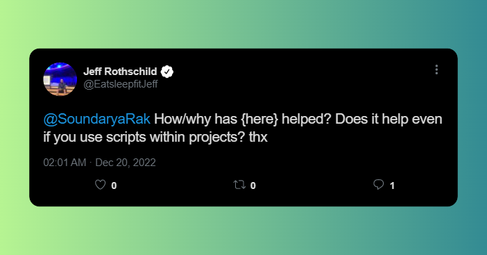
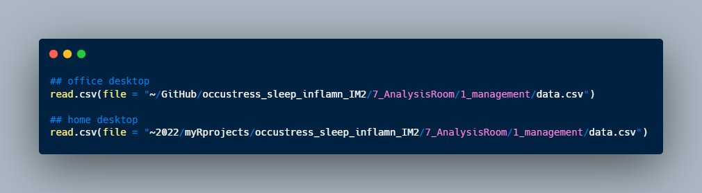
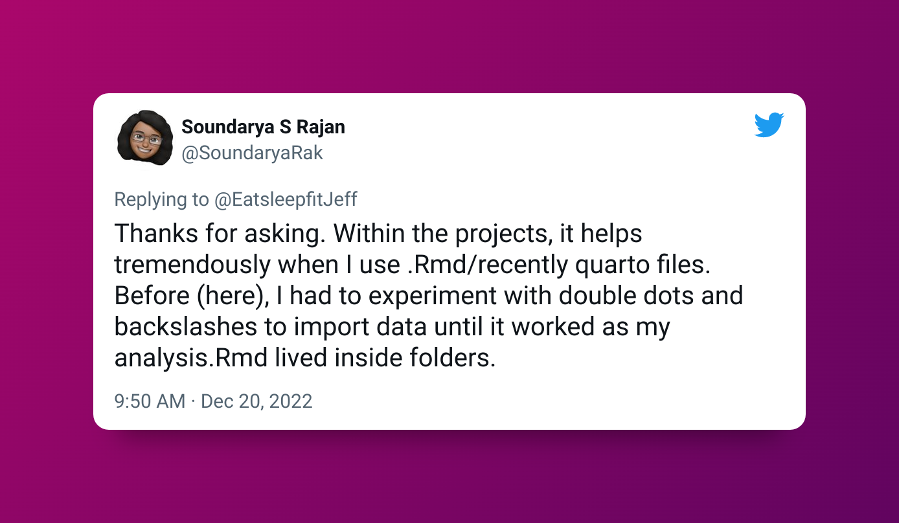

- 1
- Installs and loads the package
- 2
- Tells you where the root is
[1] "D:/MyRProjects/SoundReproSteps"This post is an introduction to the here package, a powerful tool that helps maintain best practices in reproducible workflows.

Before using the here package I faced two main issues.
Switching between my Windows work computer and Macbook at home, meant that I had to write two different sets of code to access files.
As I write both .R and .Rmd files, accessing the same data in both formats required different file paths. This has been a ongoing issue for me.

Initially, I thought using a consistent folder structure with RStudio’s projects 1 would fix the first issue. This did temporarily solve my 1st problem, however, to make matters worse, my work system was fixed and the root directory changed. This added further complexity to my workflow.
As a result, I found myself writing separate sets of code to work effectively in both locations.

I encountered further difficulties when I tried to automate my workflow by sourcing files. Alas, this made me go grrr 😠.
The answer to the troubles are in the here package.
[1] "D:/MyRProjects/SoundReproSteps"📍By knowing where the root is helps you write better file paths.
For example, let’s say this is your folder structure.
├── ProjectName.Rproj
├── 📁Data
——– ├── data_to_use.csv
├── 📁Docs
– ——├── example1.R
——– ├── example2.Rmd
To be able to access the data, the code in .R file would be
#read.csv("D:/MyRProjects/SoundReproSteps/Data/data_to_use.csv")As mentioned above, this issue arises because of the use of absolute paths, which are not suitable for use inside an .Rmd file. This is because the root directory for an .Rmd file is determined by its location.
🦹♀️
hereis for the rescue, do not fret!
Now both .R and .Rmd can take the following path.
#read.csv(here("Data", "data_to_use.csv"))Please note that the Data folder is the first folder to be accessed in the root directory, and subsequent files should be specified by their folder names

The here package solves both of the problems we encountered earlier, making life easier for all of us. Read more about the package here, here! (I think it’s pretty funny that it’s called ‘here’ 😄)
Use the here package to write relative paths for reading and writing your data and files. This will streamline your workflow, allowing you to work seamlessly across different platforms and eliminating the need to constantly adjust file paths when switching between .R and .Rmd files.
Streamline your workflow with here and say goodbye to path confusion!
In a previous blog post, I wrote about the importance of taking the first steps when starting a new project.Access it here↩︎